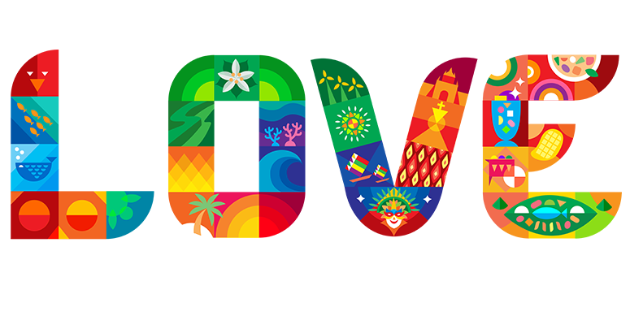

Join us on a journey through the Philippines, where every island has its unique story, every smile welcomes you home, and where you'll discover the true meaning of the phrase "It's More Fun in the Philippines."

Sinulog Festival
The Sinulog Festival is an extraordinary and vibrant cultural celebration that takes place in Cebu City, Philippines, every third Sunday of January. This festival is not only a tribute to the nation's rich history and heritage but also a heartfelt expression of faith and devotion. Sinulog is a must-see event that entices visitors from all around the world, and once you experience it, you'll understand why.
The Masskara Festival in Bacolod City, Negros Occidental, is a vibrant celebration featuring intricate masks, street performances, and music competitions. It originated in the 1980s as a response to economic challenges and has become a symbol of resilience and optimism. The festival draws visitors from around the world and serves as a joyful tribute to Bacolod's culture and history, as well as a testament to the Filipino spirit of creativity and perseverance.
The Moriones Festival in Marinduque, Philippines, is a traditional and religious celebration during Holy Week. Participants wear Roman soldier costumes with distinctive masks, representing Longinus, the centurion who witnessed Jesus's crucifixion. The festival combines religious reenactments with colorful parades and cultural events, making it a visually captivating and culturally significant tradition that attracts both local and international visitors.